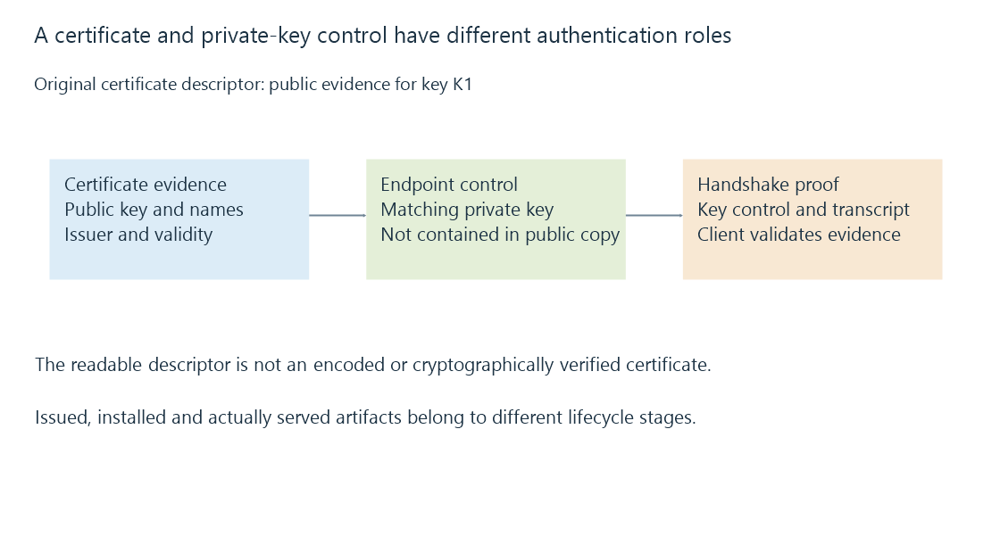

TLS certificates, public keys and endpoint evidence
A TLS certificate binds public-key and service-identity information within a signed certificate structure whose usage, validity and trust must be evaluated by the client.
A TLS certificate gives a client evidence about a public key and the identities that key is permitted to represent. An issuer’s signature protects that certificate information within its certificate structure.
The client still needs to decide whether the evidence is appropriate for the service it requested.
Inspect the roles of the fields
This original readable projection contains several relevant properties:
{
"keyId": "K1",
"issuer": "Intermediate I",
"dnsNames": ["media.example.net"],
"notBefore": "2026-10-01T00:00:00Z",
"notAfter": "2026-12-30T00:00:00Z",
"isCa": false,
"extendedUsage": ["serverAuth"]
}
The projection is not an encoded X.509 certificate or a claim that its signature was verified.
| Property | Question it helps answer |
|---|---|
| Public key | Which key participates in endpoint authentication? |
| Issuer/signature | Which issuer attests to the certificate contents? |
| Subject Alternative Name | Which service identities are presented? |
| Validity interval | At what times is this certificate valid? |
| Basic constraints and usage | Is it appropriate for this role? |
The key label K1 stands for a public key in this exercise. The actual private material is a separate artifact.

A copied certificate is insufficient to act as the endpoint
The server proves control of the matching private key during the relevant TLS authentication process. Possessing only the public certificate does not provide that proof.
Likewise, a private key paired with the wrong certificate public key cannot complete the intended certificate/key relationship.
Certificate export formats can bundle the leaf, chain and private key together for installation. The bundle’s contents and permissions must be understood as distinct from a public certificate file.
Emby’s direct secure-listener documentation describes a PKCS #12 installation artifact. That is a server-configuration role, not proof that every supplied bundle has the required chain or matching key.
Validity is evaluated at the client’s clock
The declared descriptor spans ninety days. At 12 October 2026 it is within that interval; before its notBefore or after notAfter it is not.
A wrong device clock can consequently produce a different validation outcome even when the endpoint serves the same certificate bytes.
Time validity is only one check. It does not establish the requested name, trusted issuer path, appropriate usage or relevant revocation/status result.
A certificate has a lifecycle beyond file creation
Issuance creates an artifact. Installation chooses which endpoint serves it. Renewal obtains a successor. Replacement/reload makes that successor visible on new handshakes.
These events can occur at different times. A successfully created file can remain unused while an app still sees the previous certificate.
See Also
- Certificate trust chains and path validation
- Certificate hostnames and the requested service identity
- Certificate renewal, ACME and deployed results
- HTTPS and TLS: transport protection and peer identity